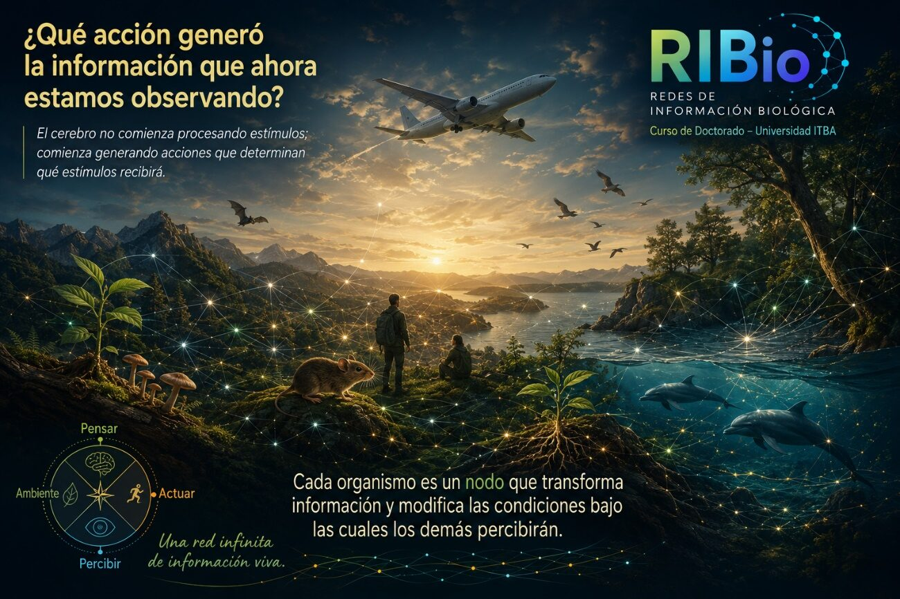

Información biológicaBiological information
RIBio propone una mirada que va más allá de las neuronas, los organismos o la inteligencia artificial, para comprender la información como una propiedad emergente de sistemas biológicos que actúan, exploran e interactúan con su entorno. RIBio proposes a perspective that goes beyond neurons, organisms, and artificial intelligence to understand information as an emergent property of biological systems that act, explore, and interact with their environment.
Una de las preguntas de base es: ¿qué ocurre cuando dejamos de pensar al cerebro como un receptor y comenzamos a verlo como un sistema que genera actividad? One of its foundational questions is: what happens when we stop thinking of the brain as a receiver and begin to see it as a system that generates activity?